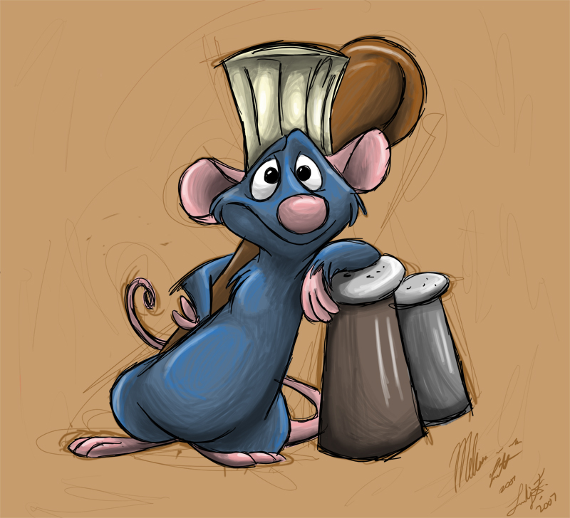

Remy @remy Nov 19
I am taking this class CS110 and the TA's are so cool!
Remy @remy Nov 19
Ratatouille 2 when???
Remy @remy Nov 19
Qui Qui baguette
Remy @remy Nov 19
The best food in the world is made in France. The best food in France is made in Paris. You know I'm right.